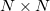
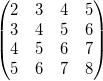
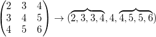

Xファンクション medianflt2 フィルタは、行列の各セルを中心とする N × N ピクセルを調べ、N × N セルの中央値を見つけ、中心の値をその中央値にします。このフィルタは、ノイズのあるピクセルは一般的にセル値の中央値から大きくそれるため、スポットノイズ(白のスポット、黒のスポット)を画像から取り除く時に便利です。
この関数を使用するには、
| 再計算 |
分析結果の再計算を制御します。
詳細は、以下をご覧下さい。分析結果の再計算 |
|---|---|
| 入力行列 |
入力データ行列 範囲制御についてはこちらを確認してください：入力データを指定する |
| 出力行列 |
出力行列 範囲制御についてはこちらを確認してください：結果の出力 |
| ウィンドウサイズ |
フィルタのウィンドウサイズを指定します。 |
| パディングオプション |
セルの外側の境界を入力する方法を指定します。
|
この関数は、行列の各セルを中心とする  の行列を調べ、N × N セルの中央値を見つけて、中心の値をその中央値にします。
例えば、
ソース行列が、次のように与えられる時を考えます。 
セル (2,2) において、3×3のフィルタ行列で処理すると、

このフィルタ行列の中央値は なので、出力行列のセル(2,2)の値は です。
元の行列の境界近くでフィルタをかける場合、フィルタが行列の外側にまたがってしまうことがあります。このような場合、ソース行列の外側を0で埋めたり(ゼロパティング)、内側のセル値を反射させたり(マッピング)、端の値を繰り返す(繰り返しパディング)ことで値を割り当てることができます。